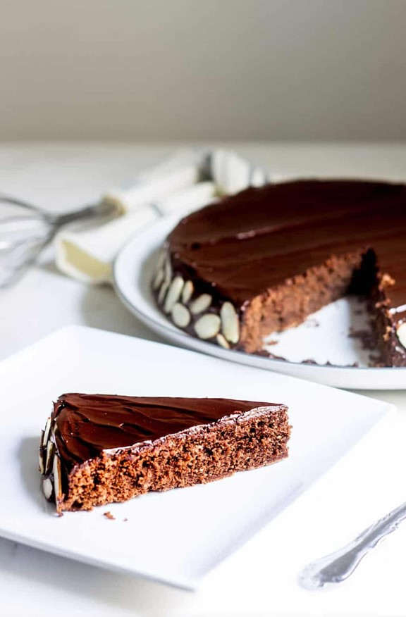

Reine de Saba chocolate cake

Description
This chocolate and almond cake is one of Julia Child's favorite cake.
It is soft and crumbly and quite easy to make! It you love chocolate cake, try it!
Ingredients
For the cake
- 4 ounces bittersweet chocolate, chopped
- 8 Tablespoons unsalted butter, at room temperature
- 2 Tablespoons dark rum (or brewed coffee)
- 1/2 teaspoon plus a pinch salt, separated
- 2/3 cup plus 1 tablespoon granulated sugar, separated
- 1/4 teaspoon almond extract
- 1/3 cup almond meal or almond flour
- 3 eggs, separate the yolks from the whites, at room temperature
- 1/2 cup cake flour, sifted
- Optional: 1/4 cup sliced almonds for garnish
For the frosting
- 2 tablespoon bittersweet chocolate, chopped
- 1/4 teaspoon salt
- 2 tablespoon dark rum (or brewed coffee)
- 6 tablespoon unsalted butter, at room temperature
Instructions
- Preheat the oven to 350°. Butter and flour a 8″ cake pan (or butter and line the pan with parchment paper).
- Melt the chocolate and the rum together in a heat-safe bowl over a pot of barely simmering water. Set aside.
- In a large bowl, beat the butter and 2/3 cup of the sugar until pale yellow and fluffy, add 1/2 teaspoon of salt and combine. Add the egg yolks one at a time and beat until well blended. Add almond extract.
- In another large bowl, with clean beaters, beat the egg whites and a pinch of salt until soft peaks form. Sprinkle one tablespoon sugar and beat until stiff peaks are formed.
- With a rubber spatula, blend the melted chocolate into the butter and sugar mixture, stir in the almond meal.
- Stir in one quarter of the beaten egg whites to lighten the batter. Delicately fold in a third of the remaining whites and when partially blended, sift one third of the flour and continue folding. Repeat this process until you’ve added all the flour and folded in all of the whites.
- Transfer the batter to the prepared pan and smooth the top. Bake for 20-25 minutes or until the edges of the pan are set and the center is still moist.Transfer the batter to the prepared pan and smooth the top. Bake for 20-25 minutes or until the edges of the pan are set and the center is still moist.
- Let cake cool in the pan on a rack for 10 minutes. Then flip the cake out onto a cake dish. Let cool completely before frosting.
- Make the frosting. Melt the chocolate and the rum together in a heat-safe bowl over a pot of barely simmering water. Remove from heat and beat in the butter with a whisk, one tablespoon at a time. If your icing is too runny set the bowl of chocolate into an ice bath and beat until the mixture has cooled to a spreading consistency.
- Frost the cake. Decorate with sliced almonds if you wish.
Notes
The picture was taken from Mon Petit Four's Reine de Saba recipe.
The recipe itself comes from baking for friends' blog.